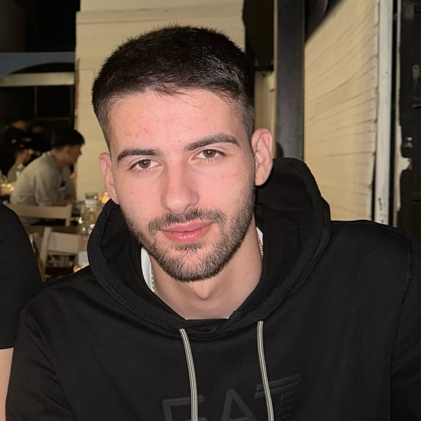
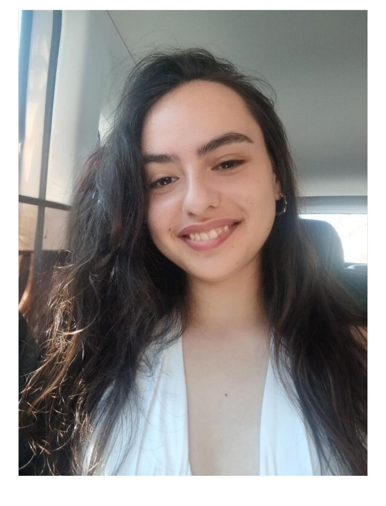

Line Scout Members

George Giannoulis
Project Coordinator
Responsible for the implementation of the robot.

Dimitris Baitsis
Hardware Engineer
Designs the proper hardware components needed for the implementation of the line follower robot.

Maria Plakidi
Software Engineer
Specializes in robot strategy and PID control algorithm implementation and performance optimization.

Stefanos John Lauder
Mechanical Designer
Responsible for the implementation of the mechanical components a line follower robot needs and helps during the assembly process.